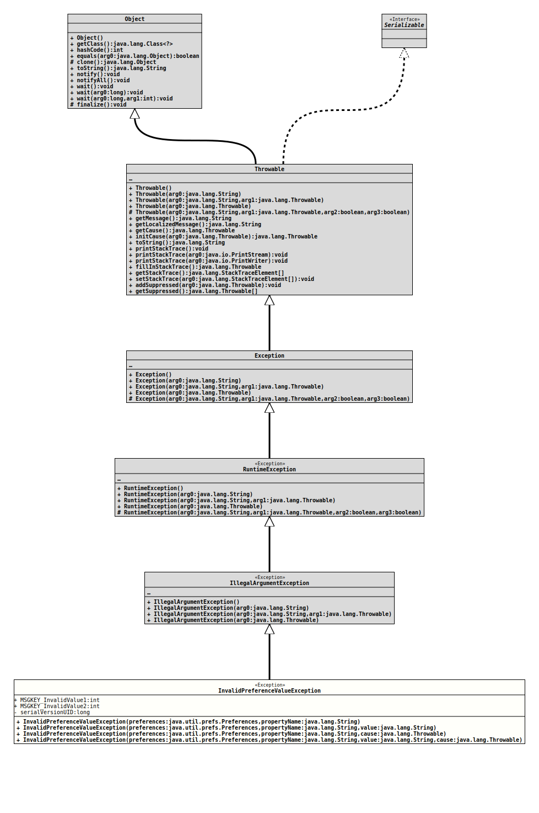

Class InvalidPreferenceValueException
java.lang.Object
java.lang.Throwable
java.lang.Exception
java.lang.RuntimeException
java.lang.IllegalArgumentException
org.tquadrat.foundation.config.spi.InvalidPreferenceValueException
- All Implemented Interfaces:
Serializable
@ClassVersion(sourceVersion="$Id: InvalidPreferenceValueException.java 914 2021-05-07 21:22:12Z tquadrat $")
public class InvalidPreferenceValueException
extends IllegalArgumentException
The is exception will be thrown by implementations of
PreferenceAccessor
in cases when the value from the preferences node (that is stored there as
a
String)
cannot be converted into the target format, for whatever reason.- Author:
- Thomas Thrien (thomas.thrien@tquadrat.org)
- Version:
- $Id: InvalidPreferenceValueException.java 914 2021-05-07 21:22:12Z tquadrat $
- Since:
- 0.0.1
- See Also:
- UML Diagram
-

UML Diagram for "org.tquadrat.foundation.config.spi.InvalidPreferenceValueException"
{kind=link}
-
Field Summary
FieldsModifier and TypeFieldDescriptionstatic final intThe message indicating an invalid preference value.static final intThe message indicating an invalid preference value. -
Constructor Summary
ConstructorsConstructorDescriptionInvalidPreferenceValueException(Preferences preferences, String propertyName) Creates a newInvalidPreferenceValueException.InvalidPreferenceValueException(Preferences preferences, String propertyName, String value) Creates a newInvalidPreferenceValueException.InvalidPreferenceValueException(Preferences preferences, String propertyName, String value, Throwable cause) Creates a newInvalidPreferenceValueException.InvalidPreferenceValueException(Preferences preferences, String propertyName, Throwable cause) Creates a newInvalidPreferenceValueException. -
Method Summary
Methods inherited from class java.lang.Throwable
addSuppressed, fillInStackTrace, getCause, getLocalizedMessage, getMessage, getStackTrace, getSuppressed, initCause, printStackTrace, printStackTrace, printStackTrace, setStackTrace, toString
-
Field Details
-
MSGKEY_InvalidValue1
The message indicating an invalid preference value.- See Also:
-
MSGKEY_InvalidValue2
The message indicating an invalid preference value.- See Also:
-
-
Constructor Details
-
InvalidPreferenceValueException
Creates a newInvalidPreferenceValueException.- Parameters:
preferences- The preferences node.propertyName- The name of the property.
-
InvalidPreferenceValueException
Creates a newInvalidPreferenceValueException.- Parameters:
preferences- The preferences node.propertyName- The name of the property.value- The invalid value.
-
InvalidPreferenceValueException
public InvalidPreferenceValueException(Preferences preferences, String propertyName, Throwable cause) Creates a newInvalidPreferenceValueException.- Parameters:
preferences- The preferences node.propertyName- The name of the property.cause- The exception that caused the failure.
-
InvalidPreferenceValueException
public InvalidPreferenceValueException(Preferences preferences, String propertyName, String value, Throwable cause) Creates a newInvalidPreferenceValueException.- Parameters:
preferences- The preferences node.propertyName- The name of the property.value- The invalid value.cause- The exception that caused the failure.
-